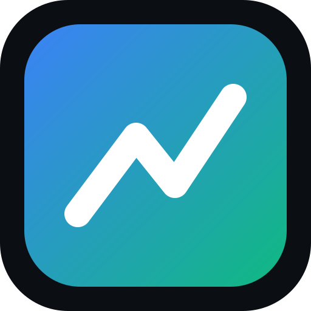

Калькулятор
Нажмите ▦ в строке вилки — цены подставятся сами.
Polymarket
Duel
| Время | Профит | Событие | Тип ставки | Лимит | Открыть |
|---|

DuelPoly| Время | Профит | Событие | Тип ставки | Лимит | Открыть |
|---|